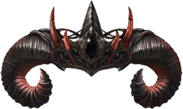
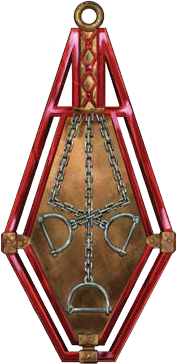
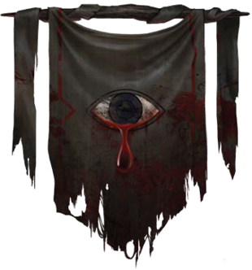
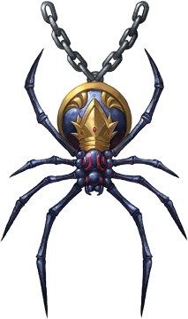
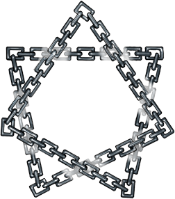
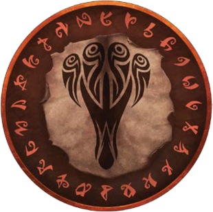
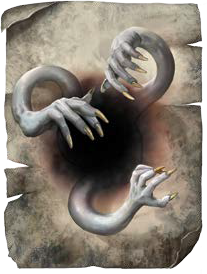
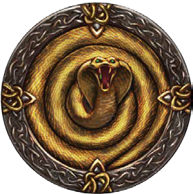

Os Desafiantes

Asmodeus, o Senhor dos Nove Infernos
Asmodeus é o líder dos desafiantes que reina os Nove Infernos e representa o domínio da tirania e da dominação. Ele se delicia em corromper almas mortais com suas palabras doces. Ele governa] seu reino com regras rigídas e aqueles que o contraria sofrem de formas inexplicáveis. Demônios e outras entidades malignas lhe oferecem tributo, enquanto feiticeiros e bruxos são atraídos por seu poder.Mandamentos do Senhor dos Nove Infernos
- Obtenha domínio e poder sobre os outros. Mostre sua força de vontade na imagem do Senhor.
- Retribua a crueldade feita a você com mais crueldade. Se os outros mostrarem bondade explore-a.
- À medida que você ascende ao poder, não tenha pena ou misericórdia daqueles que você utilizou para chegar onde está. A compaixão é o maior defeito.

Bane, o Imperador da Angústia
Bane é a entidade maligna da guerra e da conquista. Seus seguidores aceitam seu chamado para o conflito, procurando pessoas fracas para quebrar e subjugar. Nações belicosas e tribos selvagens o adoram enquanto conquistam seus territórios. Bane distorce todas as coisas vivas de acordo com a sua vontade, forçando até mesmo a própria natureza a se curvar aos seus caprichos.Mandamentos do Dragão de Platina
- O medo é seu aliado. Domine o seu e amedronte seus inimigos.
- A desordem e a rebelião devem ser punidas severamente.
- O combate deve ser sua melhor ferramenta. Aperfeiçoar ele é o verdadeiro significado de grandeza.

Gruumsh, o Destruidor
Gruumsh é a entidade que comanda hordas de saqueadores bárbaros por toda Jørden para destruir, saquear e massacrar. É considerado uma das entidades que mais eram cultuadas nos tempos antigos, sendo retratado como um Ciclope gigantesco. Seus seguidores incluem Orcs e outras criaturas que querem trazer o caos.Mandamentos do Destruidor
- Destrua. Conquiste. Mate.
- Os fracos existem para serem esmagados pelos fortes. Esmague-os.
- As únicas emoções existentes são fúria e prazer, as outras são fraquezas.

Lolth, a Rainha das Aranhas
Lolth é a entidade das mentiras, sombras e aranhas. Ela é conhecida por tecer uma complicada teia de esquemas e traições por meio de seus seguidores, enganando aliados e inimigos para obter poder. Seus principais seguidores estão ligados à sociedade drow.Mandamentos da Rainha das Aranhas
- É melhor ser amado do que ser temido, mas você pode tentar ser as duas coisas.
- Distorção, mentiras e caminhos obscuros são os mais eficientes durante um conflito direto.
- Morte aos elfos que vivem sob o sol. Morte a todos os seus aliados.

Tharizdun, o Esquecido
Tharizdun é uma das primeiras entidades que habitaram Jørden. É considerado a divindade da morte e da enganação. Ele permanece adormecido no infinito do Abismo e junto com suas hordas de demônios.Mandamentos do Esquecido
- Descubra, restaure e exalte os santuários esquecidos em sua homenagem.
- Ofereça e desvie energia para Tharizdun até que ele seja libertado.
- Destrua e arrase os reinos para se preparar para o Fim dos Tempos.

Tiamat, a Mãe dos Dragões.
Tiamat é a rainha dos dragões maléficos. Ela é temida pela ganância, inveja e riqueza acumulada e a matrona da maioria dos dragões. Ela é inimiga jurada de BahamutMandamentos do Senhor das Tempestades
- Acumule riqueza e gaste pouco. O ouro, e o poder que vem com ele, são recompensas suficientes.
- Não perdoe ou esqueça aqueles que te desprezaram. Que nenhuma afronta fique impune.
- Apossar aquilo que você cobiça. Aqueles sem força para defender seu domínio não são dignos de ter um domínio.

Torog, o Rei Rastejador
Torog é a entidade das torturas e escravização. Seus seguidores são aqueles que vivem no Abismo e daqueles que buscam a dominação de todas as criaturas. Dizem que os caminhos do mundo inferior são consequências de suas lágrimas de dor e raiva, e seu reino é uma conexão de cavernas mortais.Mandamentos do Rei Rastejador
- Proteja as regiões selvagens inexploradas da exploração corrupta e destruição.
- Mate as abominações e outras criaturas sombrias que ameaçam a natureza.
- Abrace e respeite a natureza selvagem do mundo. Exista em harmonia com ela.

Zehir, a Serpente Mascarada.
Zehir é a entidade dos venenos, assassinos e das trevas. Ele é o criador das serpentes e dos Yuan-ti. Seus seguidores incluem assassinos, corruptos e pessoas que buscam a vingança.Mandamentos da Serpente Mascarada
- Mantenha suas ações ofuscadas e em segredo. A escuridão é sua maior aliada.
- Ataque rapidamente e sem planejar. Cegue o alvo com a confusão.
- Mate lentamente. Agonizando-os. Ou pior, faça-os sentirem prazer na morte.